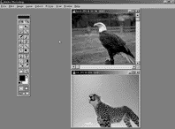
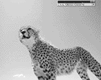
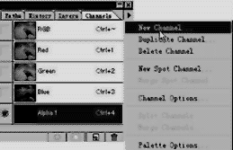
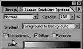
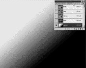

|
| 当前位置：电脑报电子版 > 1999 年 > 26 期 > OA专刊 > 移花接木——Photoshop图片自由接合技术 |
| 《 移花接木——Photoshop图片自由接合技术 》 |
Adobe
Photoshop以强大的特技功能、灵活友好的操作界面赢得了诸多图形工作者的青睐。不断更新的版本使其图形处理技术更趋完善， 被广泛应用于各个领域。它更以堪称天衣无缝的图片接合技术，异化出一幅幅精美的电脑美术作品，可谓妙趣横生，其乐无穷。让老虎的头“长”在一只跃跃欲飞的雄鹰上，你试过吗？好吧！让我们来看看长上去的具体方法及步骤，也许你也能从中找到些许灵感。 被广泛应用于各个领域。它更以堪称天衣无缝的图片接合技术，异化出一幅幅精美的电脑美术作品，可谓妙趣横生，其乐无穷。让老虎的头“长”在一只跃跃欲飞的雄鹰上，你试过吗？好吧！让我们来看看长上去的具体方法及步骤，也许你也能从中找到些许灵感。一、图片编辑处理 进入Photoshop5的图形操作界面，点击“File/Open”，同时打开选择好的老虎(Tiger)及鹰(Eagle)的源图片（图1）。在选择图片时应考虑两张图片的比例、透视、色差等因素。 1.图片色彩调整：点击“Image/Adjust/levels”(色彩调整工具)，进行灰度级的直方图变换，它能明显改变图像灰度级的分布（图2）。通过对Tiger及Eagle的调整，可弥补源图中的不足之处，如色彩亮度、饱和度等，最终达到理想效果。另外还有诸多色彩调整工具可供选择。 2.图片效果处理：如果源图片是通过扫描仪输入，则必须擦除网纹，在此我们就不作具体阐述。 二、素材截取处理 1.找出两幅图片的最佳融合点，通过观察，我们决定从Tiger颈部以上的地方开始入手。找准融合点可以使图片接合起来更加容易。 2.首先将Tiger窗口设为最大化。 3.点取“Windows/Show/Paths”，在出现的对话框中点取右上角三角形中的“New Path”(新建路径)，出现“Path 1”。利用“Path”，勾出Tiger的脖子（图3）。 4.用鼠标点击“Path 1”的同时，按住“Ctrl”键，这时可将“Path”转化为选择区（图4）。（用鼠标选取“Path”，再按下“Enter”键，也能迅速将“Path”转化为选择区。） 5.点击“Edit/Copy”，再选择Eagle窗口，将其最大化，再按“Ctrl＋V”键，将其粘贴至Eagle窗口中。  6.将粘贴进去的部分按比例缩至需要的大小放好（如图5），因颈部的某一部分处于被Eagle翅膀遮盖状态，所以应将这部分删除。未被遮盖的部分，亦应用工具箱中的“Rubber
Stamp tool”（像皮图章工具）将其抹去。 6.将粘贴进去的部分按比例缩至需要的大小放好（如图5），因颈部的某一部分处于被Eagle翅膀遮盖状态，所以应将这部分删除。未被遮盖的部分，亦应用工具箱中的“Rubber
Stamp tool”（像皮图章工具）将其抹去。7.将Tiger层上的Opacity值（透明度值）改为50％（图6）。这样在修改过程中，不必担心会多删除，起到事半功倍的作用。将Tiger多余的部分删除后（图7），应立即恢复“Opacity”值为100％。 好了，现在素材截取工作基本完成，不过接合得较为生硬，我们再继续。 三、效果处理 为了让画面看来更加自然，如何将它们融合在一起很重要，可以用Channel(通道)进行色层渐隐处理。 1.首先在“Channels”(通道)面板的右上角的三角形中点击“New Channels”(新建通道层)出现一个新的通道层（图8） 2.双击工具箱中的“Gradient Tool”(梯度色阶工具)，出现对话框（图9）。在“Gadient”中选“Foreground to Background”，这时，将画面的前景色设为白色，背景色设为黑色，由左上角向右下角渐变（图10）。 3.回到Tiger层，点击“Select/Load Selection”，出现对话框，在选择“South”对话中的“Channels”栏中选择“Alpha 1”通道层（图11）。这时，在Tiger层上会出现选择区，试着按“Delete”键将其删除，这时颈部将会透出Eagle层的部分，产生渐隐效果。如果透出太多，可将选择区向下移，再删除，这样直至达到理想效果为止。 4.最后再用工具箱中的“Blur Tools”（边缘羽化工具）将Tiger头部边缘羽化，这样看上来就比较自然了（图12）。 好了，现在一幅奇异的电脑美术作品完成，还等什么，让我们翱翔在创意的空间，一起去感受那个亦真亦幻的神奇世界吧！ 编后语 灵感源于经验的积累、灵感源于激情的迸发、灵感……小编经常会见到这样的场面，对创作灵感的看法，大师们总是会争个喋喋不休。他们也许是想找到创作的捷径，也许是因为一丝不苟、追求完美的职业习惯吧！小编在此不敢妄下断言。不过，在此要先道声谢，感谢大家对CAX专区一如既往地支持与厚爱。众所周知，电脑美术作品的艺术效果已经到了出神入化之境界，本专区的“作品欣赏”专栏将会不定期地刊出一些优秀的作品，同时，希望大家能够踊跃投稿，这里，绝对不失为一个艺术交流、启发灵感的绚丽舞台。（文/杨天绿） |
| 下载本期推荐软件 | 页 首 |
| 《电脑报》版权所有，电脑报网站编辑部设计制作发布 |